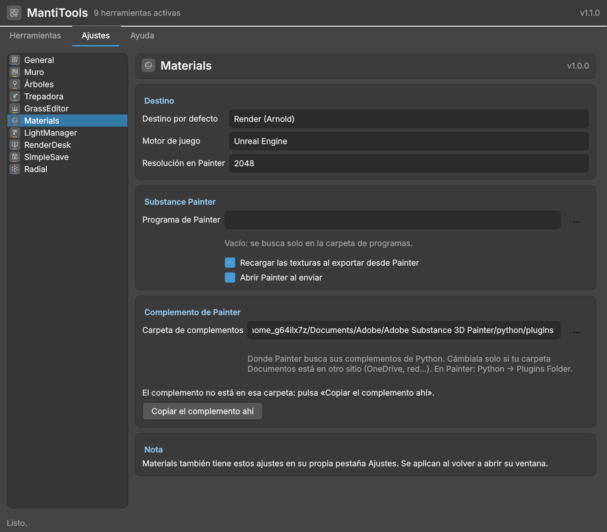

Para qué sirve
Materials pone materiales a tus modelos sin perderte en el Hypershade: eliges una receta en segundos, la ajustas con ocho controles que se entienden y, si quieres pintar texturas, mandas el objeto a Substance 3D Painter y las texturas vuelven ya conectadas. Los materiales son nodos openPBRSurface normales, que se pueden seguir tocando a mano.
1. Elegir destino
Clic en el icono Materials. Arriba elige:
- Render (Arnold) si vas a renderizar en Maya.
- Videojuego si el modelo va a Unreal, Unity o un motor web. Elige también el motor.
| Render (Arnold) | Videojuego | |
|---|---|---|
| Controles | Los ocho | Color, Rugosidad, Metal, Transparencia (alfa) y Emisión |
| Transparencia | Transmisión real con refracción | Alfa, como en los motores |
| Painter exporta | Mapas sueltos, normal OpenGL | Unreal: ORM y normal DirectX · Unity: BaseMap y MaskMap · glTF: ORM |
2. Elegir una receta
En Biblioteca hay 286 recetas con valores reales, en 13 familias: metales, plásticos y gomas, maderas, piedra y cerámica, construcción, terreno, vidrio y líquidos, telas, piel y orgánicos, comida, pinturas y lacas, luces y pantallas, y arcilla. Busca por familia o escribe (oro, vidrio, piel, hormigón…).
- Clic: la ves en la esfera.
- Doble clic: se crea el material y se pone a lo seleccionado (objetos o caras).
3. Ajustarla
En Material mueve los ocho controles. Los cambios se ven al momento en el visor y en el render interactivo.
| Control | Piensa en… |
|---|---|
| Color | El color base, sin luz ni sombras |
| Rugosidad | 0 espejo, 1 mate. Es el que más cambia un material |
| Metal | 0 o 1. Nada de 0,5 salvo con textura |
| Transparencia | Vidrio, agua. En videojuego es alfa |
| Subsuperficie | Piel, cera, mármol, leche |
| Barniz | Laca, pintura de coche, esmalte |
| Pelusa | Terciopelo, lana |
| Emisión | Neones, pantallas |
Lee los avisos debajo de la esfera: dicen si algo no es realista y por qué. Para editar el material de otro objeto, selecciónalo y pulsa Cuentagotas (también en el clic derecho del icono).
4. Texturas
- Desde Painter: selecciona el objeto (con UVs) y Enviar a Painter. En Painter, en el panel Materials, pulsa Abrir, pinta y pulsa Exportar a Maya. Las texturas aparecen solas en Maya cada vez que exportas.
- De internet o de otra carpeta: pestaña Texturas, elige la carpeta, Analizar y Conectar. Reconoce los nombres de Painter, Poly Haven, Quixel, Unreal y Unity, con UDIM y el espacio de color correcto.
Nota
El complemento de Painter lo instala MantiTools. En Painter, actívalo una vez en Python › materials_painter.
5. Antes de entregar
- Texturas › Copiar al proyecto: así las texturas viajan con la escena.
- Escena: borra los materiales sin usar, pon el prefijo
M_a los tuyos y convierte Standard Surface, aiStandardSurface o Lambert a OpenPBR. - Si al abrir en otro ordenador salen texturas rosas: Texturas › Reparar rutas.
Recetas propias y compartidas
Guardar receta las deja en Mis recetas. Si usas una carpeta compartida, sus recetas (.json en materials/) salen en la biblioteca para todo el grupo.
Atajos
En el Editor de atajos de Maya (Hotkey Editor), categoría Custom Scripts › Materials: MaterialsAbrir, MaterialsAsignar, MaterialsCuentagotas y MaterialsEnviarPainter.
En el estante
| Cómo | Orden |
|---|---|
| Clic en el icono | Abrir Materials |
| Clic derecho | Asignar a la selección |
| Clic derecho | Cuentagotas |
| Clic derecho | Enviar a Painter |
Ajustes en MantiTools

Destino
| Ajuste | Valores | Qué hace | Clave |
|---|---|---|---|
| Destino por defecto | Render (Arnold), Videojuego | destino |
|
| Motor de juego | Unreal Engine, Unity, glTF / Godot / web | motor_juego |
|
| Resolución en Painter | 512, 1024, 2048, 4096 | resolucion |
Substance Painter
| Ajuste | Valores | Qué hace | Clave |
|---|---|---|---|
| Programa de Painter | Un archivo | Vacío: se busca solo en la carpeta de programas. | ruta_painter |
| Recargar las texturas al exportar desde Painter | Sí / no | sincronizar |
|
| Abrir Painter al enviar | Sí / no | abrir_painter |
Complemento de Painter
| Ajuste | Valores | Qué hace | Clave |
|---|---|---|---|
| Carpeta de complementos | Una carpeta | Donde Painter busca sus complementos de Python. Cámbiala solo si tu carpeta Documentos está en otro sitio (OneDrive, red…). En Painter: Python → Plugins Folder. | carpeta_complemento |
| Copiar el complemento ahí | Botón |